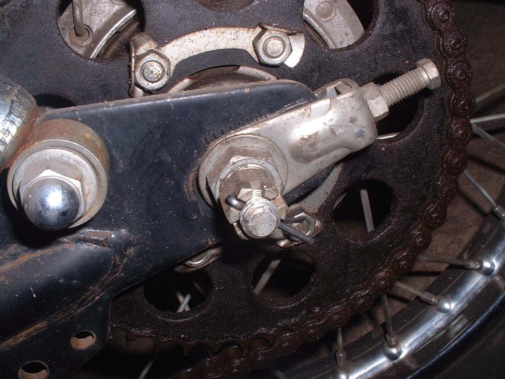
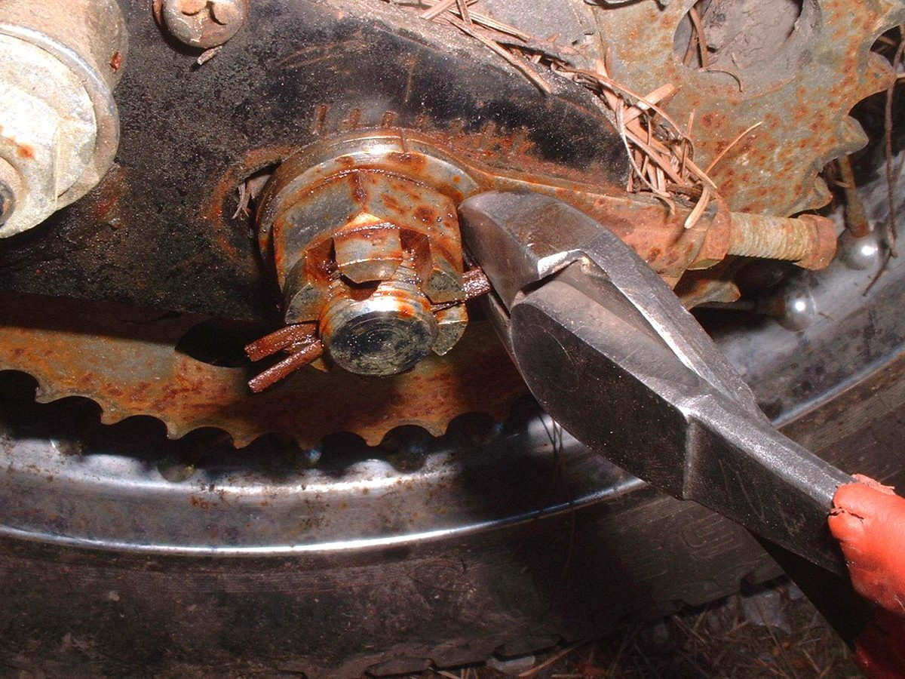
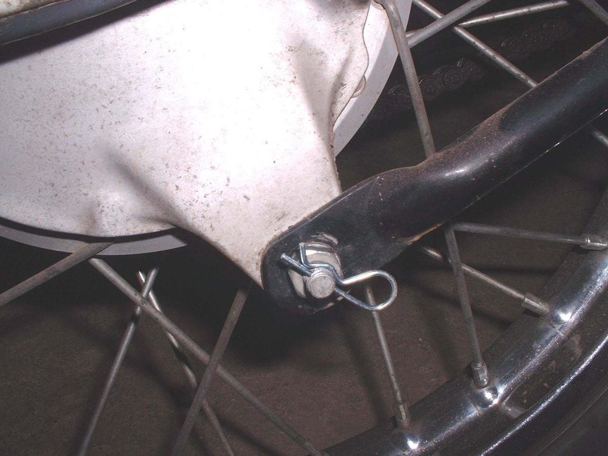

Cotter pins and slip pins stop castle nuts and plain nuts from turning off. This is very important on axles. Fit them correctly and they can be removed again.
Safety
- A missing pin on an axle nut can cause a wheel to come off. Never ride without it.
Remove a rusted pin
- Straighten the ends of the pin.
- Use wire cutters to lever the pin out. Do not squeeze too hard or the round end may cut off.
- If the end cuts off, lever the two halves out from the other side.
Fit a pin
- Tighten the castle nut to the torque in your manual.
- If the slots in the nut do not line up with the hole in the shaft, tighten a little more until they do. Never loosen the nut to line them up.
- Fit a new cotter pin when the old one is bent. Bending it again fatigues the metal.
- Fit the pin with the round, closed end towards the front of the bike, the direction of travel.
- Bend the ends as your manual shows. Some manuals say to wrap both ends tightly around the nut. Some riders bend only one end at about 45 degrees so the pin can be removed and reused. If the manual shows a method, follow it, and never leave the pin straight.
- Check the pin again after the first ride.
Slip pins
- A slip pin holds a nut or clevis. Replace if bent or fatigued. Manuals may show the exact position.
Check your work
- The pin sits through the shaft and nut slot and cannot slide out.
- The nut is at the correct torque.
If it did not fix the problem
- Nuts or bolts loosening: Nuts and bolts keep coming loose.